Acerca de mí / About me
Soy profesional en desarrollo web y ciberseguridad, apasionada por crear soluciones tecnológicas seguras y eficientes.
I am a web development and cybersecurity professional, passionate about creating secure and efficient tech solutions.
Habilidades / Skills


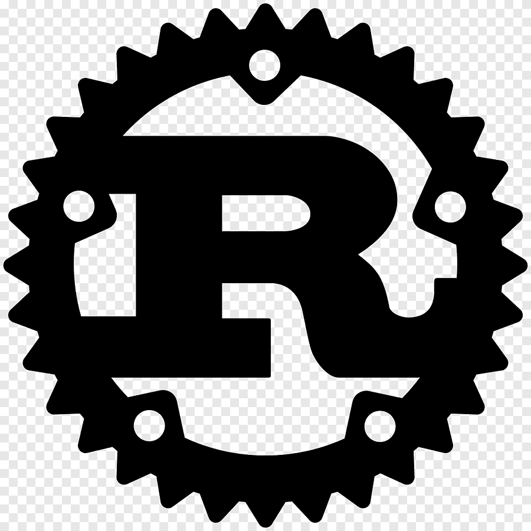
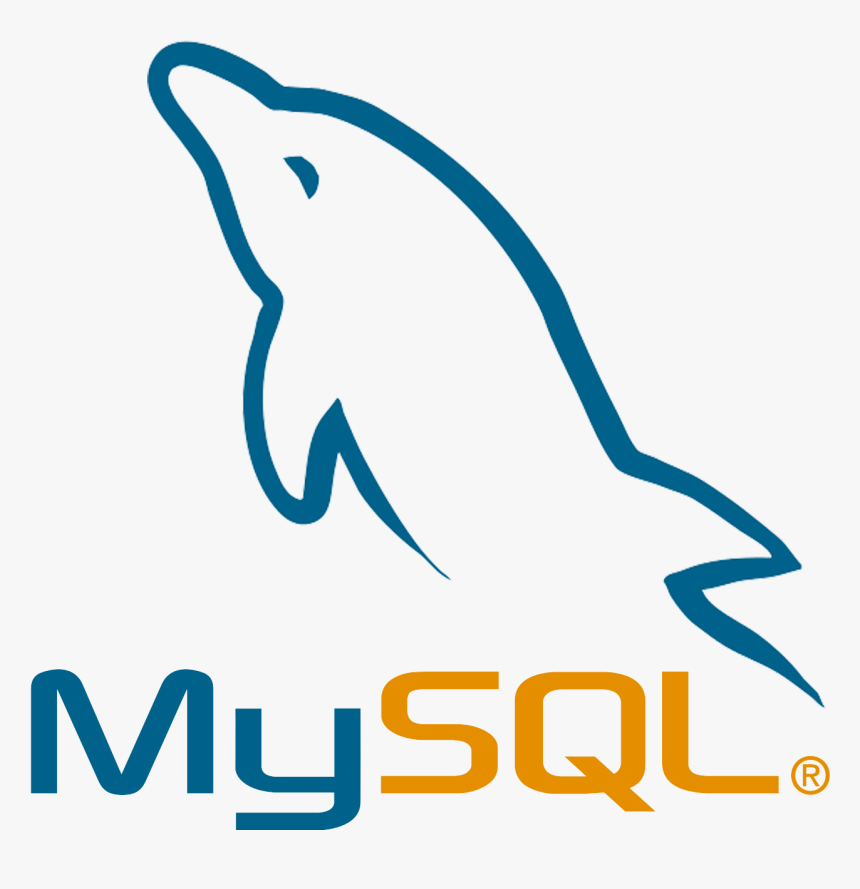
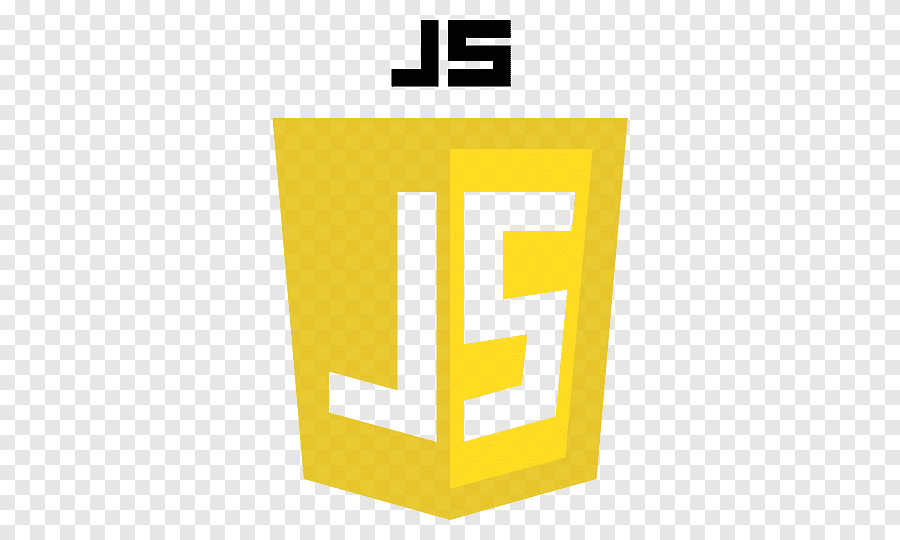
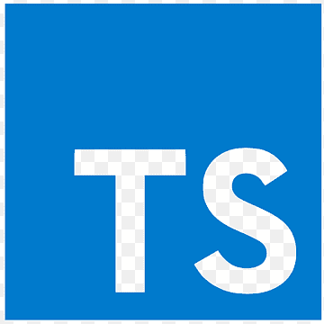

Proyectos / Projects
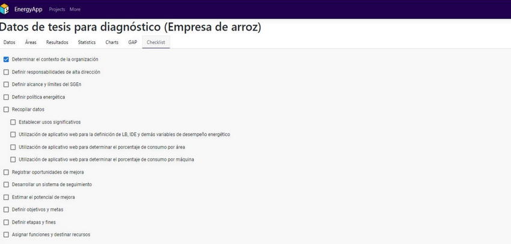
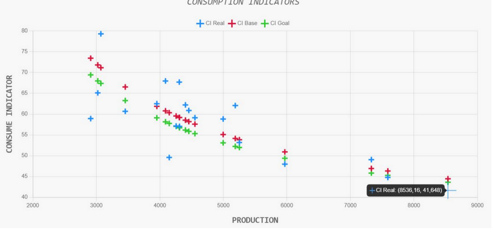
EnergyApp: Optimización de consumo energético en PYMEs / Thesis / Energy Consumption Optimization in SMEs
Desarrollé una solución tecnológica basada en IoT y análisis de datos para optimizar el consumo energético de PYMEs, aumentando eficiencia y reduciendo costos.
I developed a tech solution using IoT and data analysis to optimize energy consumption in SMEs, improving efficiency and reducing costs.
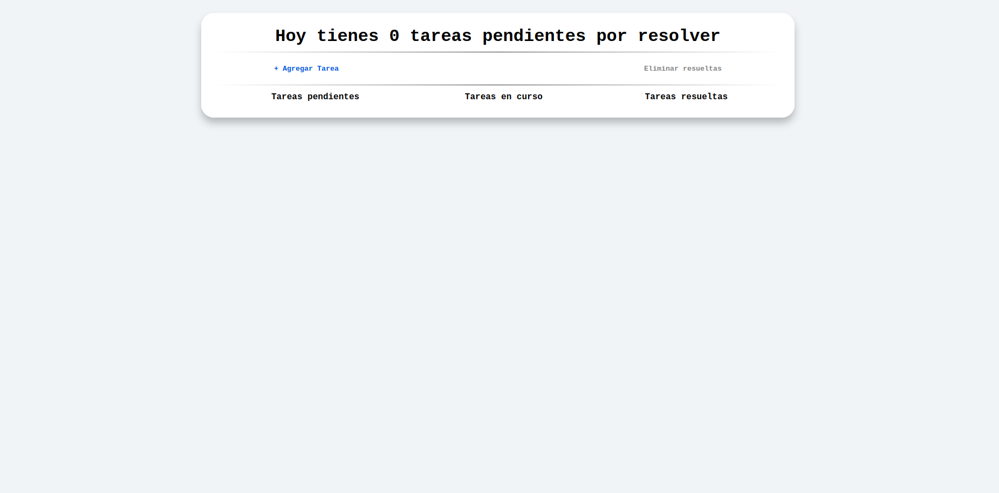
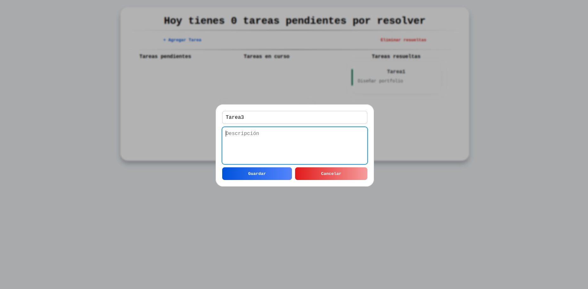
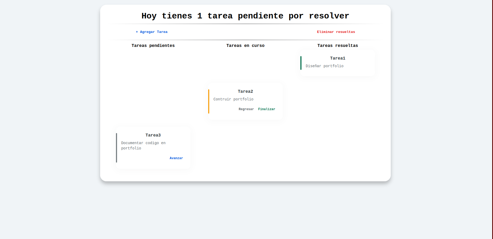
Gestor de Tareas / Task Manager
Desarrollé un gestor de tareas interactivo, manejando estados, agregando y eliminando tareas, incluyendo la función de eliminar todas las tareas de forma segura.
I developed an interactive task manager, handling states, adding and deleting tasks, including a feature to safely delete all tasks at once.
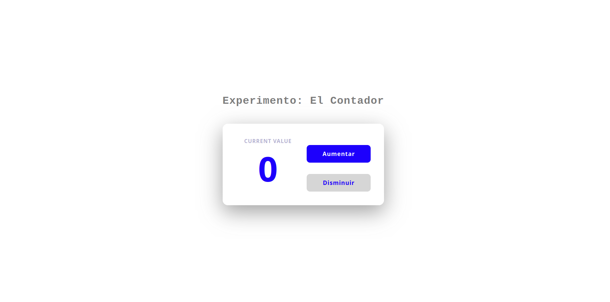
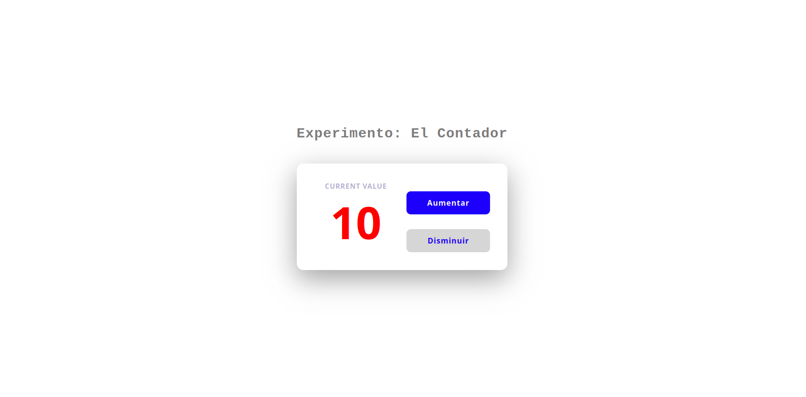
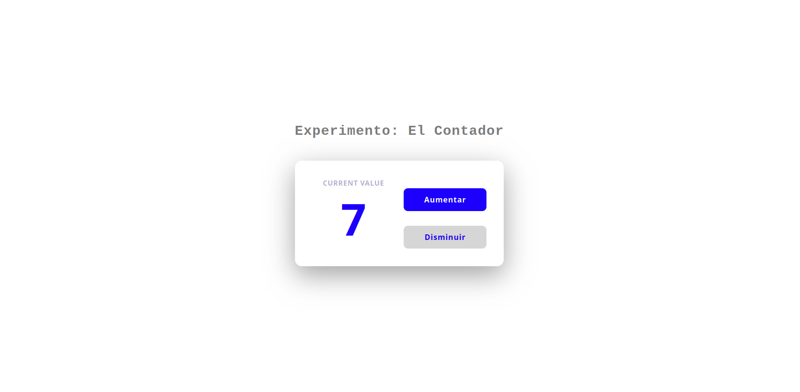
Contador Interactivo / Interactive Counter
Creé un contador que incrementa o decrementa según el botón presionado, con cambio de color al llegar a 10, demostrando manejo de estados y dinamismo en la interfaz.
I built a counter that increments or decrements based on the button clicked, changing color when it reaches 10, showcasing state management and dynamic UI.
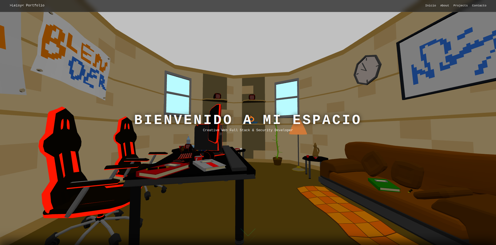
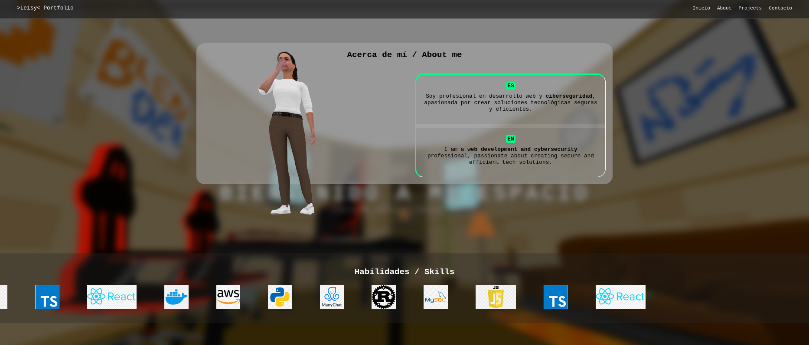
Oficina de Leisy / Leisy's Office
Desarrollé un portafolio 3D donde presento mi información, CV y proyectos usando modelos GLB y animaciones interactivas, demostrando habilidades avanzadas en visualización web y UI/UX.
I built an interactive 3D portfolio showcasing my info, CV, and projects using GLB models and interactive animations, demonstrating advanced web visualization and UI/UX skills.
"En mi camino como desarrolladora, he aprendido a convertir retos en soluciones, con el objetivo de crear tecnología segura, eficiente y con impacto real."
"In my journey as a developer, I have learned to turn challenges into solutions, aiming to build secure, efficient, and impactful technology."